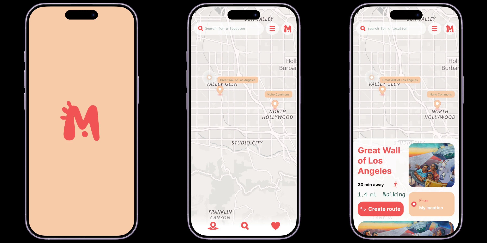
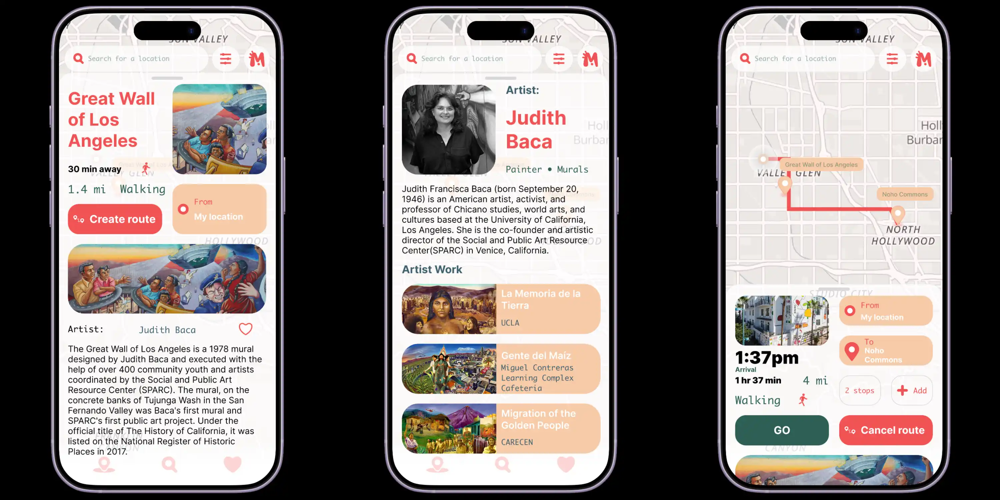
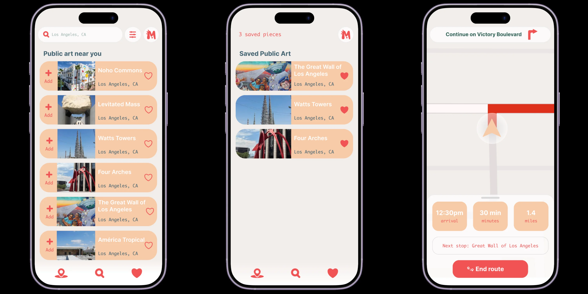

UX/UI Design
UX/UI Design
Project Brief
This was a self-directed project, built to demonstrate digital product thinking alongside my print and identity work. I set my own brief: someone walking around a neighborhood has no easy way to know a piece of public art is nearby, who made it, or what it means. It’s usually stumbled upon, if it’s seen at all. I wanted to design an app that turns that into something deliberate, closer to how people already use a map app to plan a trip.
Core Screens
The app’s core loop runs from discovery to detail to a full walking route: tap a pin on the map, learn about the piece and its artist, save what you like, and string saved pieces into a walkable route with real turn-by-turn guidance.



Closing Thought
MuralWalk was built specifically to extend my design work into digital product thinking, information architecture (how a mural, its artist, and a multi-stop route relate to each other), interaction design (a draggable bottom sheet, a variable-driven map state), and a lightweight brand system built to support an app rather than a printed piece. It’s the same design thinking behind my print work, applied to a different medium.